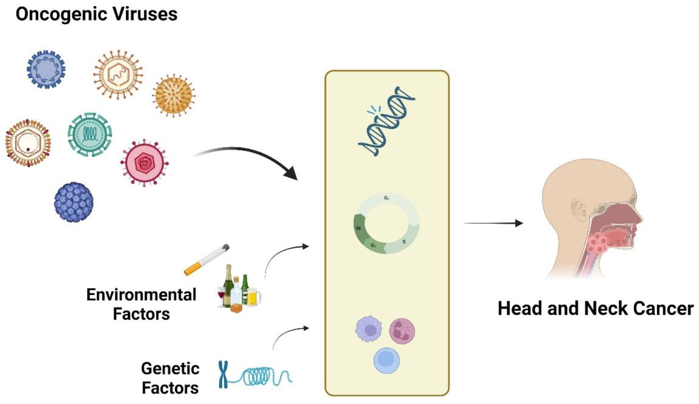

Mechanism of Oncogenic Viruses
Oncogenic viruses cause cancer by interfering with the normal regulatory mechanisms of the host cell. Here is how the process generally works:
- Viral Entry: The virus enters the host cell and releases its genetic material (DNA or RNA).
- Integration: Some oncogenic viruses integrate their genetic material into the host genome, altering the cell's genetic instructions.
- Disruption of Cell Cycle: Viral genes may produce proteins that inactivate tumor suppressor genes (such as p53 and Rb) or activate oncogenes, leading to uncontrolled cell division.
- Chronic Inflammation: Persistent viral infection can cause chronic inflammation, which increases the risk of mutations and cancer development.
- Immune Evasion: Oncogenic viruses often develop mechanisms to evade the host immune system, allowing infected cells to survive and proliferate.
Examples of oncogenic viruses include Human Papillomavirus (HPV), Hepatitis B and C viruses (HBV, HCV), Epstein-Barr Virus (EBV), and others.

(Replace this image URL with your preferred image from Google Images if desired)